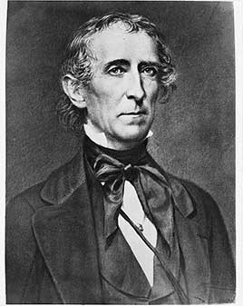

The first vice president to become president when a president died, and he insisted on full powers rather than acting as a caretaker. A states'-rights former Democrat on the Whig ticket, he vetoed the Whigs' bills to recreate a national bank; his whole cabinet except Daniel Webster resigned and the party expelled him. He settled the Maine border with Britain and pushed through the annexation of Texas days before leaving office. In 1861 he sided with the Confederacy.
Shaded areas show the years in office, with a few years before and after for comparison. Until 1842 the federal budget year matched the calendar year and debt figures are dated January 1; from 1843 to 1976 budget years ran July to June.
January 1, 1841: $5.25 million → June 30, 1844 (end of fiscal 1844): $23.46 million
Daily debt figures don't exist before 1993. Until 1842 the Treasury's figures are dated January 1; after that, the end of the budget year. The debt rose in the depression that followed the Panic of 1837.
Debt as a share of GDP. Above 100% means the debt is bigger than a year of everything the country produces.
Money borrowed each budget year (below the line) or paid down (above). The White House budget office's yearly figures begin in 1901.
No national estimates before 1890. Economist Stanley Lebergott's yearly estimates, the earliest national series, begin in 1890
How much prices rose each year (consumer price index).
What everyday prices and paychecks did while in office.
Prices use the consumer price index (MeasuringWorth). The minimum wage is the federal rate set by Congress.
17 orders. Count from the American Presidency Project.
Yearly counts aren't reliable for this era. Orders were not numbered until 1907, when the State Department numbered the ones already in its files, and many orders were never numbered at all, so only the total is shown.
Source: American Presidency Project: executive orders (full list of every order).
Most orders in this era were routine, such as setting aside public land or exempting jobs from civil service rules.
Incomplete: orders before 1929 were not numbered or collected consistently. This archive has 2 of the roughly 17 orders counted for this president.
Source: Executive Orders Archive, compiled from the American Presidency Project and the Federal Register. Topics are the archive's automated tags; "Revoked" and similar labels come from the Federal Register's records.
A pardon wipes out the punishment for a federal crime; a commutation shortens a sentence but leaves the conviction. The Justice Department's published counts begin in 1900.
The Justice Department's published clemency counts begin in fiscal 1900, so there are no reliable yearly totals for this presidency.
Source: U.S. Dept. of Justice, clemency statistics, which lists every recipient with the crime and sentence.
No individual grants from this presidency are highlighted yet.
The same checklist for every president. Tap a row for details and sources.
In January 1843 the House voted 127–83 against a resolution to investigate impeaching him over his vetoes, the first such vote against a president.
SourceNever charged.
No member of his cabinet or White House staff was convicted.
None were appointed.
No official investigation found he used federal law enforcement against opponents.
No one in the administration was charged or formally penalized.
What happened, what was proven, and how it ended.
Tyler vetoed two Whig bills to create a new national bank, saying they were unconstitutional. Five of six cabinet members resigned, and Whigs in Congress expelled him from the party.
Outcome: He governed without a party; a House committee condemned his use of the veto in 1842.
SourceWhen the Senate rejected his annexation treaty, Tyler had Congress annex Texas by simple majority vote. His secretary of state, John C. Calhoun, openly defended annexation as a way to protect slavery.
Outcome: Texas joined as a slave state in December 1845; Mexico cut relations, a step toward war.
SourceTyler enslaved dozens of people at his Virginia plantation, Sherwood Forest, before, during and after his presidency.
Outcome: He never freed them.
SourceAfter a failed peace conference, Tyler backed Virginia's secession and was elected to the Confederate Congress.
Outcome: He died in 1862 before taking his seat; Washington did not officially mourn him.
SourceWidely quoted remarks, with the context they were said in.
No widely quoted remarks with a reliable source are included yet.